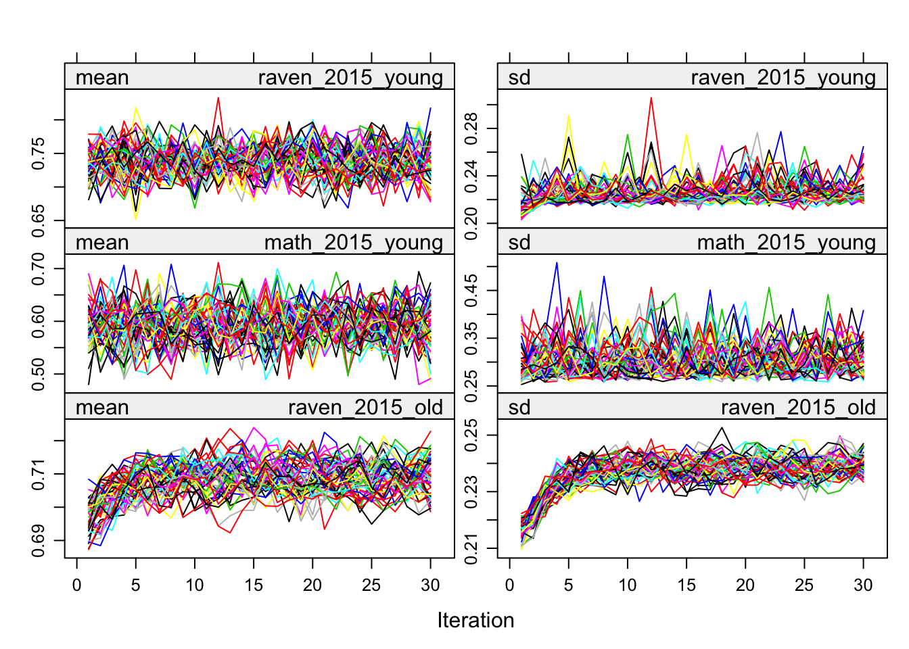
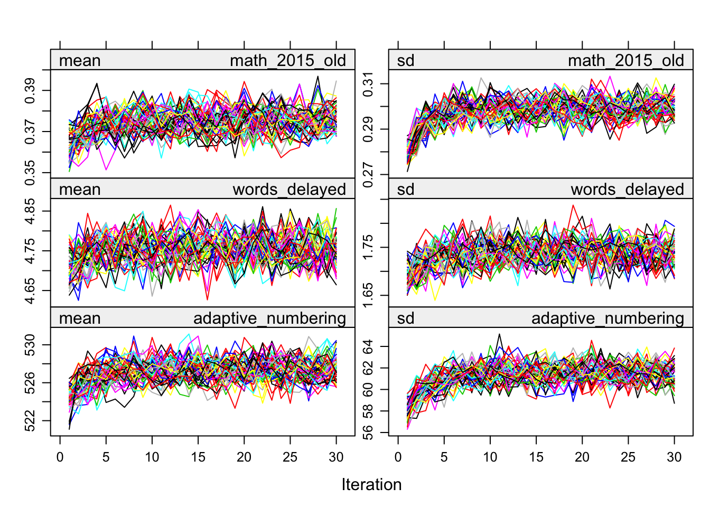

3_imputation_check
Laura Botzet & Ruben Arslan
28 September 2017
Imputation Checks
Helper
library(mitml)## *** This is beta software. Please report any bugs!
## *** See the NEWS file for recent changes.source("0_helpers.R")##
## Attaching package: 'formr'## The following object is masked from 'package:rmarkdown':
##
## word_document##
## Attaching package: 'lubridate'## The following object is masked from 'package:base':
##
## date##
## Attaching package: 'broom.mixed'## The following object is masked from 'package:broom':
##
## tidyMCMC## Loading required package: carData## lattice theme set by effectsTheme()
## See ?effectsTheme for details.##
## Attaching package: 'data.table'## The following objects are masked from 'package:lubridate':
##
## hour, isoweek, mday, minute, month, quarter, second, wday, week, yday, year## The following objects are masked from 'package:formr':
##
## first, last## Loading required package: Matrix##
## Attaching package: 'lmerTest'## The following object is masked from 'package:lme4':
##
## lmer## The following object is masked from 'package:stats':
##
## step## Loading required package: usethis##
## Attaching package: 'psych'## The following objects are masked from 'package:ggplot2':
##
## %+%, alpha## This is lavaan 0.6-5## lavaan is BETA software! Please report any bugs.##
## Attaching package: 'lavaan'## The following object is masked from 'package:psych':
##
## cor2cov## Loading required package: lattice## Loading required package: survival## Loading required package: Formula##
## Attaching package: 'Hmisc'## The following object is masked from 'package:psych':
##
## describe## The following objects are masked from 'package:base':
##
## format.pval, units##
## Attaching package: 'tidyr'## The following objects are masked from 'package:Matrix':
##
## expand, pack, unpack##
## Attaching package: 'dplyr'## The following objects are masked from 'package:Hmisc':
##
## src, summarize## The following objects are masked from 'package:data.table':
##
## between, first, last## The following objects are masked from 'package:lubridate':
##
## intersect, setdiff, union## The following objects are masked from 'package:formr':
##
## first, last## The following objects are masked from 'package:stats':
##
## filter, lag## The following objects are masked from 'package:base':
##
## intersect, setdiff, setequal, union##
## Attaching package: 'codebook'## The following object is masked from 'package:psych':
##
## bfi## The following objects are masked from 'package:formr':
##
## aggregate_and_document_scale, asis_knit_child, expired, paste.knit_asis, rescue_attributes,
## reverse_labelled_values##
## Attaching package: 'effsize'## The following object is masked from 'package:psych':
##
## cohen.dknitr::opts_chunk$set(error = T)Data
### Import alldata used for birthorder and g-factors computed
alldata_birthorder = readRDS("data/alldata_birthorder_missing.rds")
birthorder = readRDS("data/alldata_birthorder_i_ml5.rds")
alldata_birthorder_i <- birthorder
colnames(alldata_birthorder)mother_pidlink, age, male, birthorder_naive, sibling_count_naive, count_birthorder_naive, birthorder_genes, sibling_count_genes, count_birthorder_genes, raven_2015_young, math_2015_young, raven_2015_old, math_2015_old, words_delayed, adaptive_numbering, raven_2007_old, raven_2007_young, math_2007_young, math_2007_old, count_backwards, big5_ext, big5_con, big5_open, big5_neu, big5_agree, riskA, riskB, years_of_education, age2 and age3
birthorder <- mids2mitml.list(birthorder)
## Calculate g_factors (for now with rowMeans: better to run factor analysis here as well?)
birthorder <- within(birthorder, {
g_factor_2015_old <- rowMeans(scale(cbind(raven_2015_old, math_2015_old, count_backwards, words_delayed, adaptive_numbering)))
})
birthorder <- within(birthorder, {
g_factor_2015_young <- rowMeans(scale(cbind(raven_2015_young, math_2015_young)))
})
birthorder <- within(birthorder, {
g_factor_2007_old <- rowMeans(scale(cbind(raven_2007_old, math_2007_old)))
})
birthorder <- within(birthorder, {
g_factor_2007_young <- rowMeans(scale(cbind(raven_2007_young, math_2007_young)))
})
birthorder = birthorder %>% tbl_df.mitml.list
### Birthorder and Sibling Count
birthorder_data = birthorder[[1]]
birthorder = birthorder %>%
mutate(birthorder_genes = ifelse(birthorder_genes < 1, 1, birthorder_genes),
birthorder_naive = ifelse(birthorder_naive < 1, 1, birthorder_naive),
birthorder_genes = round(birthorder_genes),
birthorder_naive = round(birthorder_naive),
sibling_count_genes = ifelse(sibling_count_genes < 2, 2, sibling_count_genes),
sibling_count_naive = ifelse(sibling_count_naive < 2, 2, sibling_count_naive),
sibling_count_genes = round(sibling_count_genes),
sibling_count_naive = round(sibling_count_naive)
) %>%
group_by(mother_pidlink) %>%
# make sure sibling count is consistent with birth order (for which imputation model seems to work better)
mutate(sibling_count_genes = max(birthorder_genes, sibling_count_genes)) %>%
ungroup()
birthorder2 = birthorder %>%
mutate(
# birthorder as factors with levels of 1, 2, 3, 4, 5, 5+
birthorder_naive_factor = as.character(birthorder_naive),
birthorder_naive_factor = ifelse(birthorder_naive > 5, "5+",
birthorder_naive_factor),
birthorder_naive_factor = factor(birthorder_naive_factor,
levels = c("1","2","3","4","5","5+")),
sibling_count_naive_factor = as.character(sibling_count_naive),
sibling_count_naive_factor = ifelse(sibling_count_naive > 5, "5+",
sibling_count_naive_factor),
sibling_count_naive_factor = factor(sibling_count_naive_factor,
levels = c("2","3","4","5","5+")),
birthorder_genes_factor = as.character(birthorder_genes),
birthorder_genes_factor = ifelse(birthorder_genes >5 , "5+", birthorder_genes_factor),
birthorder_genes_factor = factor(birthorder_genes_factor,
levels = c("1","2","3","4","5","5+")),
sibling_count_genes_factor = as.character(sibling_count_genes),
sibling_count_genes_factor = ifelse(sibling_count_genes >5 , "5+",
sibling_count_genes_factor),
sibling_count_genes_factor = factor(sibling_count_genes_factor,
levels = c("2","3","4","5","5+")),
# interaction birthorder * siblingcout for each birthorder
count_birthorder_naive =
factor(str_replace(as.character(interaction(birthorder_naive_factor, sibling_count_naive_factor)),
"\\.", "/"),
levels = c("1/2","2/2", "1/3", "2/3",
"3/3", "1/4", "2/4", "3/4", "4/4",
"1/5", "2/5", "3/5", "4/5", "5/5",
"1/5+", "2/5+", "3/5+", "4/5+",
"5/5+", "5+/5+")),
count_birthorder_genes =
factor(str_replace(as.character(interaction(birthorder_genes_factor, sibling_count_genes_factor)), "\\.", "/"),
levels = c("1/2","2/2", "1/3", "2/3",
"3/3", "1/4", "2/4", "3/4", "4/4",
"1/5", "2/5", "3/5", "4/5", "5/5",
"1/5+", "2/5+", "3/5+", "4/5+",
"5/5+", "5+/5+")))
### Variables
birthorder = birthorder %>%
mutate(
g_factor_2015_old = (g_factor_2015_old - mean(g_factor_2015_old, na.rm=T)) / sd(g_factor_2015_old, na.rm=T),
g_factor_2015_young = (g_factor_2015_young - mean(g_factor_2015_young, na.rm=T)) / sd(g_factor_2015_young, na.rm=T),
g_factor_2007_old = (g_factor_2007_old - mean(g_factor_2007_old, na.rm=T)) / sd(g_factor_2007_old, na.rm=T),
g_factor_2007_young = (g_factor_2007_young - mean(g_factor_2007_young, na.rm=T)) / sd(g_factor_2007_young, na.rm=T),
raven_2015_old = (raven_2015_old - mean(raven_2015_old, na.rm=T)) / sd(raven_2015_old),
math_2015_old = (math_2015_old - mean(math_2015_old, na.rm=T)) / sd(math_2015_old, na.rm=T),
raven_2015_young = (raven_2015_young - mean(raven_2015_young, na.rm=T)) / sd(raven_2015_young),
math_2015_young = (math_2015_young - mean(math_2015_young, na.rm=T)) /
sd(math_2015_young, na.rm=T),
raven_2007_old = (raven_2007_old - mean(raven_2007_old, na.rm=T)) / sd(raven_2007_old),
math_2007_old = (math_2007_old - mean(math_2007_old, na.rm=T)) / sd(math_2007_old, na.rm=T),
raven_2007_young = (raven_2007_young - mean(raven_2007_young, na.rm=T)) / sd(raven_2007_young),
math_2007_young = (math_2007_young - mean(math_2007_young, na.rm=T)) /
sd(math_2007_young, na.rm=T),
count_backwards = (count_backwards - mean(count_backwards, na.rm=T)) /
sd(count_backwards, na.rm=T),
words_delayed = (words_delayed - mean(words_delayed, na.rm=T)) /
sd(words_delayed, na.rm=T),
adaptive_numbering = (adaptive_numbering - mean(adaptive_numbering, na.rm=T)) /
sd(adaptive_numbering, na.rm=T),
big5_ext = (big5_ext - mean(big5_ext, na.rm=T)) / sd(big5_ext, na.rm=T),
big5_con = (big5_con - mean(big5_con, na.rm=T)) / sd(big5_con, na.rm=T),
big5_agree = (big5_agree - mean(big5_agree, na.rm=T)) / sd(big5_agree, na.rm=T),
big5_open = (big5_open - mean(big5_open, na.rm=T)) / sd(big5_open, na.rm=T),
big5_neu = (big5_neu - mean(big5_neu, na.rm=T)) / sd(big5_neu, na.rm=T),
riskA = (riskA - mean(riskA, na.rm=T)) / sd(riskA, na.rm=T),
riskB = (riskB - mean(riskB, na.rm=T)) / sd(riskB, na.rm=T),
years_of_education_z = (years_of_education - mean(years_of_education, na.rm=T)) /
sd(years_of_education, na.rm=T)
)Functions needed
n_imputations.mitml = function(imps) {
imps$iter$m
}
n_imputations.mids = function(imps) {
imps$m
}
n_imputations.amelia = function(imps) {
length(imps$imputations)
}
n_imputations = function(imps) { UseMethod("n_imputations") }
complete.mitml = mitml::mitmlComplete
complete.mids = mice::complete
complete = function(...) { UseMethod("complete") }
library(mice)##
## Attaching package: 'mice'## The following object is masked _by_ '.GlobalEnv':
##
## complete## The following object is masked from 'package:tidyr':
##
## complete## The following objects are masked from 'package:base':
##
## cbind, rbindlibrary(miceadds)## * miceadds 3.7-6 (2019-12-15 13:38:43)library(mitml)
corr_pipe = . %>% as.matrix() %>%
Hmisc::rcorr(.) %>% {
left_join(left_join(.$r %>% reshape2::melt() %>% rename(r = value),
.$n %>% reshape2::melt() %>% rename(n = value), by = c("Var1", "Var2")),
.$P %>% reshape2::melt() %>% rename(p = value),
by = c("Var1", "Var2"))
} %>%
arrange(desc(r)) %>%
filter(Var1 != Var2)
alldata_birthorder_i_g_factor <- birthorder
alldata_birthorder_i_tbl = alldata_birthorder_i_g_factor %>% tbl_df.mitml.listCompute g factor
Or rather simply a sum score of scaled test scores to keep things simple here.
# Imputed data
alldata_birthorder_i_g_factor <- within(alldata_birthorder_i_g_factor, {
g_factor_2015 <- rowMeans(scale(cbind(raven_2015_old, math_2015_old, count_backwards, words_delayed, adaptive_numbering)))
})
alldata_birthorder_i_g_factor <- within(alldata_birthorder_i_g_factor, {
g_factor_2007 <- rowMeans(scale(cbind(raven_2007_old, math_2007_old, count_backwards, words_delayed, adaptive_numbering)))
})Iterations and convergence
plot(alldata_birthorder_i)


birthorder <- mids2mitml.list(alldata_birthorder_i)Correlations, iterations and density
# correlations
correlations_original = corr_pipe(alldata_birthorder %>% select_if(is.numeric))
correlations_imputed = corr_pipe(alldata_birthorder_i_g_factor[[1]] %>% select_if(is.numeric))
correlations_original = correlations_original %>%
mutate(v = paste0(Var1, Var2)) %>%
rename(Var1_original = Var1, Var2_original= Var2, n_original = n, r_original = r, p_original = p)
correlations_imputed = correlations_imputed %>%
mutate(v = paste0(Var1, Var2)) %>%
rename(Var1_imputed = Var1, Var2_imputed = Var2, n_imputed = n, r_imputed = r, p_imputed = p)
correlations = full_join(correlations_original, correlations_imputed, by = "v")
cor.test(correlations$r_original, correlations$r_imputed)| Test statistic | df | P value | Alternative hypothesis | cor |
|---|---|---|---|---|
| 64.09 | 700 | 4.117e-295 * * * | two.sided | 0.9243 |
library(ggrepel)
sum(abs(correlations$r_original - correlations$r_imputed) > 0.5, na.rm = T)## [1] 2correlations <- correlations %>%
mutate(label = if_else(abs(r_original - r_imputed) > 0.4,
paste(Var1_original, Var2_original),
NA_character_))
ggplot(correlations, aes(r_original, r_imputed)) +
geom_point(alpha = 0.1) +
geom_text_repel(aes(label = label))check densities of imputed/real
densityplot(alldata_birthorder_i, ~ birthorder_genes + sibling_count_genes)densityplot(alldata_birthorder_i, ~ raven_2015_young + math_2015_young + raven_2015_old + math_2015_old)densityplot(alldata_birthorder_i, ~ words_delayed + adaptive_numbering + count_backwards)densityplot(alldata_birthorder_i, ~ raven_2007_old + raven_2007_young + math_2007_young + math_2007_old)densityplot(alldata_birthorder_i, ~ big5_ext + big5_con + big5_open + big5_neu + big5_agree)densityplot(alldata_birthorder_i, ~ riskA + riskB)densityplot(alldata_birthorder_i, ~ years_of_education)G-Factor
# Normal data - no misses
alldata_birthorder <- alldata_birthorder %>%
mutate(pidlink = row_number())
no_miss = alldata_birthorder %>%
filter(!is.na(raven_2015_old), !is.na(math_2015_old), !is.na(count_backwards),
!is.na(words_delayed), !is.na(adaptive_numbering))
fa.parallel(no_miss %>% select(raven_2015_old, math_2015_old, count_backwards, words_delayed, adaptive_numbering) %>% data.frame())
## Parallel analysis suggests that the number of factors = 2 and the number of components = 1fa(no_miss %>% select(raven_2015_old, math_2015_old, count_backwards, words_delayed, adaptive_numbering) %>% data.frame(), nfactors = 1)## Factor Analysis using method = minres
## Call: fa(r = no_miss %>% select(raven_2015_old, math_2015_old, count_backwards,
## words_delayed, adaptive_numbering) %>% data.frame(), nfactors = 1)
## Standardized loadings (pattern matrix) based upon correlation matrix
## MR1 h2 u2 com
## raven_2015_old 0.60 0.36 0.64 1
## math_2015_old 0.51 0.26 0.74 1
## count_backwards 0.47 0.22 0.78 1
## words_delayed 0.41 0.17 0.83 1
## adaptive_numbering 0.61 0.38 0.62 1
##
## MR1
## SS loadings 1.39
## Proportion Var 0.28
##
## Mean item complexity = 1
## Test of the hypothesis that 1 factor is sufficient.
##
## The degrees of freedom for the null model are 10 and the objective function was 0.56 with Chi Square of 7402
## The degrees of freedom for the model are 5 and the objective function was 0.01
##
## The root mean square of the residuals (RMSR) is 0.02
## The df corrected root mean square of the residuals is 0.02
##
## The harmonic number of observations is 13151 with the empirical chi square 66.03 with prob < 6.8e-13
## The total number of observations was 13151 with Likelihood Chi Square = 66.32 with prob < 6e-13
##
## Tucker Lewis Index of factoring reliability = 0.983
## RMSEA index = 0.031 and the 90 % confidence intervals are 0.024 0.037
## BIC = 18.9
## Fit based upon off diagonal values = 1
## Measures of factor score adequacy
## MR1
## Correlation of (regression) scores with factors 0.82
## Multiple R square of scores with factors 0.67
## Minimum correlation of possible factor scores 0.34om_results = omega(no_miss %>% select(raven_2015_old, math_2015_old, count_backwards, words_delayed, adaptive_numbering) %>% data.frame(), nfactors = 1, sl = F)## Omega_h for 1 factor is not meaningful, just omega_tom_results## Omega
## Call: omegah(m = m, nfactors = nfactors, fm = fm, key = key, flip = flip,
## digits = digits, title = title, sl = sl, labels = labels,
## plot = plot, n.obs = n.obs, rotate = rotate, Phi = Phi, option = option,
## covar = covar)
## Alpha: 0.65
## G.6: 0.6
## Omega Hierarchical: 0.65
## Omega H asymptotic: 1
## Omega Total 0.65
##
## Schmid Leiman Factor loadings greater than 0.2
## g F1* h2 u2 p2
## raven_2015_old 0.60 0.36 0.64 1
## math_2015_old 0.51 0.26 0.74 1
## count_backwards 0.47 0.22 0.78 1
## words_delayed 0.41 0.17 0.83 1
## adaptive_numbering 0.61 0.38 0.62 1
##
## With eigenvalues of:
## g F1*
## 1.4 0.0
##
## general/max 8354082811971781 max/min = 1
## mean percent general = 1 with sd = 0 and cv of 0
## Explained Common Variance of the general factor = 1
##
## The degrees of freedom are 5 and the fit is 0.01
## The number of observations was 13151 with Chi Square = 66.32 with prob < 6e-13
## The root mean square of the residuals is 0.02
## The df corrected root mean square of the residuals is 0.02
## RMSEA index = 0.031 and the 10 % confidence intervals are 0.024 0.037
## BIC = 18.9
##
## Compare this with the adequacy of just a general factor and no group factors
## The degrees of freedom for just the general factor are 5 and the fit is 0.01
## The number of observations was 13151 with Chi Square = 66.32 with prob < 6e-13
## The root mean square of the residuals is 0.02
## The df corrected root mean square of the residuals is 0.02
##
## RMSEA index = 0.031 and the 10 % confidence intervals are 0.024 0.037
## BIC = 18.9
##
## Measures of factor score adequacy
## g F1*
## Correlation of scores with factors 0.82 0
## Multiple R square of scores with factors 0.67 0
## Minimum correlation of factor score estimates 0.34 -1
##
## Total, General and Subset omega for each subset
## g F1*
## Omega total for total scores and subscales 0.65 0.65
## Omega general for total scores and subscales 0.65 0.65
## Omega group for total scores and subscales 0.00 0.00omega.diagram(om_results)
"g_factor_nomiss =~ raven_2015_old + math_2015_old + count_backwards + words_delayed + adaptive_numbering" %>%
cfa(data = no_miss, std.lv = T, std.ov = T) -> cfa_g
summary(cfa_g)## lavaan 0.6-5 ended normally after 14 iterations
##
## Estimator ML
## Optimization method NLMINB
## Number of free parameters 10
##
## Number of observations 13151
##
## Model Test User Model:
##
## Test statistic 66.282
## Degrees of freedom 5
## P-value (Chi-square) 0.000
##
## Parameter Estimates:
##
## Information Expected
## Information saturated (h1) model Structured
## Standard errors Standard
##
## Latent Variables:
## Estimate Std.Err z-value P(>|z|)
## g_factor_nomiss =~
## raven_2015_old 0.601 0.010 58.478 0.000
## math_2015_old 0.512 0.010 49.908 0.000
## count_backwrds 0.475 0.010 46.155 0.000
## words_delayed 0.408 0.010 39.376 0.000
## adaptiv_nmbrng 0.614 0.010 59.659 0.000
##
## Variances:
## Estimate Std.Err z-value P(>|z|)
## .raven_2015_old 0.639 0.011 57.294 0.000
## .math_2015_old 0.738 0.011 66.322 0.000
## .count_backwrds 0.775 0.011 69.060 0.000
## .words_delayed 0.834 0.011 72.907 0.000
## .adaptiv_nmbrng 0.623 0.011 55.665 0.000
## g_factor_nomss 1.000## Explained variance:
x = inspect(cfa_g, "rsquare")
no_miss$g_factor_nomiss = predict(cfa_g)[,1]
no_miss = no_miss %>% select(pidlink, g_factor_nomiss)
alldata_birthorder = left_join(alldata_birthorder, no_miss, by = "pidlink")
qplot(alldata_birthorder$g_factor_nomiss)## `stat_bin()` using `bins = 30`. Pick better value with `binwidth`.
qplot(alldata_birthorder_i_g_factor[[1]]$g_factor_2015)## `stat_bin()` using `bins = 30`. Pick better value with `binwidth`.
qplot(alldata_birthorder_i_g_factor[[1]]$g_factor_2007)## `stat_bin()` using `bins = 30`. Pick better value with `binwidth`.
summary(lm(g_factor_nomiss ~ raven_2015_old, alldata_birthorder))| Estimate | Std. Error | t value | Pr(>|t|) |
|---|---|---|---|
| -1.795 | 0.01523 | -117.8 | 0 |
| 2.569 | 0.02068 | 124.2 | 0 |
| Observations | Residual Std. Error | \(R^2\) | Adjusted \(R^2\) |
|---|---|---|---|
| 13151 | 0.5545 | 0.54 | 0.5399 |
summary(lm(g_factor_2015 ~ raven_2015_old, alldata_birthorder_i_g_factor[[1]]))| Estimate | Std. Error | t value | Pr(>|t|) |
|---|---|---|---|
| -3.129e-15 | 0.003715 | -8.423e-13 | 1 |
| 0.4553 | 0.003715 | 122.6 | 0 |
| Observations | Residual Std. Error | \(R^2\) | Adjusted \(R^2\) |
|---|---|---|---|
| 16063 | 0.4708 | 0.4833 | 0.4833 |
summary(lm(g_factor_nomiss ~ raven_2015_young, alldata_birthorder))| Estimate | Std. Error | t value | Pr(>|t|) |
|---|---|---|---|
| -1.459 | 0.03528 | -41.35 | 9.881e-324 |
| 2.129 | 0.04343 | 49.02 | 0 |
| Observations | Residual Std. Error | \(R^2\) | Adjusted \(R^2\) |
|---|---|---|---|
| 5250 | 0.6195 | 0.3141 | 0.314 |
summary(lm(g_factor_2015 ~ raven_2015_young, alldata_birthorder_i_g_factor[[1]]))| Estimate | Std. Error | t value | Pr(>|t|) |
|---|---|---|---|
| -1.199e-15 | 0.004378 | -2.739e-13 | 1 |
| 0.3479 | 0.004378 | 79.46 | 0 |
| Observations | Residual Std. Error | \(R^2\) | Adjusted \(R^2\) |
|---|---|---|---|
| 16063 | 0.5549 | 0.2822 | 0.2821 |
alldata_birthorder %>% {cor.test(.$g_factor_nomiss, .$years_of_education)}| Test statistic | df | P value | Alternative hypothesis | cor |
|---|---|---|---|---|
| 60.48 | 12922 | 0 * * * | two.sided | 0.4697 |
alldata_birthorder_i_g_factor[[1]] %>% {cor.test(.$g_factor_2015, .$years_of_education)}| Test statistic | df | P value | Alternative hypothesis | cor |
|---|---|---|---|---|
| 70.52 | 16061 | 0 * * * | two.sided | 0.4862 |
alldata_birthorder_i_g_factor[[1]] %>% {cor.test(.$g_factor_2007, .$years_of_education)}| Test statistic | df | P value | Alternative hypothesis | cor |
|---|---|---|---|---|
| 71.34 | 16061 | 0 * * * | two.sided | 0.4906 |
alldata_birthorder_i_g_factor[[1]] %>% {cor.test(.$g_factor_2007, .$g_factor_2015)}| Test statistic | df | P value | Alternative hypothesis | cor |
|---|---|---|---|---|
| 209.2 | 16061 | 0 * * * | two.sided | 0.8553 |
LS0tCnRpdGxlOiAiM19pbXB1dGF0aW9uX2NoZWNrIgphdXRob3I6ICJMYXVyYSBCb3R6ZXQgJiBSdWJlbiBBcnNsYW4iCmRhdGU6ICIyOCBTZXB0ZW1iZXIgMjAxNyIKb3V0cHV0OiBodG1sX2RvY3VtZW50CmVkaXRvcl9vcHRpb25zOiAKICBjaHVua19vdXRwdXRfdHlwZTogY29uc29sZQotLS0KCiMgPHNwYW4gc3R5bGU9ImNvbG9yOiNGRkQ5MkYiPkltcHV0YXRpb24gQ2hlY2tzPC9zcGFuPgoKYGBge3Igc2V0dXAsIGluY2x1ZGU9RkFMU0V9CmtuaXRyOjpvcHRzX2NodW5rJHNldChlY2hvID0gVFJVRSkKYGBgCgojIyBIZWxwZXIKYGBge3IgaGVscGVyfQpsaWJyYXJ5KG1pdG1sKQpzb3VyY2UoIjBfaGVscGVycy5SIikKa25pdHI6Om9wdHNfY2h1bmskc2V0KGVycm9yID0gVCkKYGBgCgoKIyMgRGF0YQpgYGB7cn0KIyMjIEltcG9ydCBhbGxkYXRhIHVzZWQgZm9yIGJpcnRob3JkZXIgYW5kIGctZmFjdG9ycyBjb21wdXRlZAphbGxkYXRhX2JpcnRob3JkZXIgPSByZWFkUkRTKCJkYXRhL2FsbGRhdGFfYmlydGhvcmRlcl9taXNzaW5nLnJkcyIpCgpiaXJ0aG9yZGVyID0gIHJlYWRSRFMoImRhdGEvYWxsZGF0YV9iaXJ0aG9yZGVyX2lfbWw1LnJkcyIpCmFsbGRhdGFfYmlydGhvcmRlcl9pIDwtIGJpcnRob3JkZXIKCmNvbG5hbWVzKGFsbGRhdGFfYmlydGhvcmRlcikKYGBgCgoKYGBge3IgZGF0YSBwcmVwYXJhdGlvbnN9CmJpcnRob3JkZXIgPC0gbWlkczJtaXRtbC5saXN0KGJpcnRob3JkZXIpCgojIyBDYWxjdWxhdGUgZ19mYWN0b3JzIChmb3Igbm93IHdpdGggcm93TWVhbnM6IGJldHRlciB0byBydW4gZmFjdG9yIGFuYWx5c2lzIGhlcmUgYXMgd2VsbD8pCmJpcnRob3JkZXIgPC0gd2l0aGluKGJpcnRob3JkZXIsIHsKICBnX2ZhY3Rvcl8yMDE1X29sZCA8LSByb3dNZWFucyhzY2FsZShjYmluZChyYXZlbl8yMDE1X29sZCwgbWF0aF8yMDE1X29sZCwgY291bnRfYmFja3dhcmRzLCAgd29yZHNfZGVsYXllZCwgYWRhcHRpdmVfbnVtYmVyaW5nKSkpCn0pCgpiaXJ0aG9yZGVyIDwtIHdpdGhpbihiaXJ0aG9yZGVyLCB7CiAgZ19mYWN0b3JfMjAxNV95b3VuZyA8LSByb3dNZWFucyhzY2FsZShjYmluZChyYXZlbl8yMDE1X3lvdW5nLCBtYXRoXzIwMTVfeW91bmcpKSkKfSkKCmJpcnRob3JkZXIgPC0gd2l0aGluKGJpcnRob3JkZXIsIHsKICBnX2ZhY3Rvcl8yMDA3X29sZCA8LSByb3dNZWFucyhzY2FsZShjYmluZChyYXZlbl8yMDA3X29sZCwgbWF0aF8yMDA3X29sZCkpKQp9KQoKYmlydGhvcmRlciA8LSB3aXRoaW4oYmlydGhvcmRlciwgewogIGdfZmFjdG9yXzIwMDdfeW91bmcgPC0gcm93TWVhbnMoc2NhbGUoY2JpbmQocmF2ZW5fMjAwN195b3VuZywgbWF0aF8yMDA3X3lvdW5nKSkpCn0pCgoKYmlydGhvcmRlciA9IGJpcnRob3JkZXIgJT4lIHRibF9kZi5taXRtbC5saXN0CgojIyMgQmlydGhvcmRlciBhbmQgU2libGluZyBDb3VudApiaXJ0aG9yZGVyX2RhdGEgPSBiaXJ0aG9yZGVyW1sxXV0KCmJpcnRob3JkZXIgPSBiaXJ0aG9yZGVyICU+JQogIG11dGF0ZShiaXJ0aG9yZGVyX2dlbmVzID0gaWZlbHNlKGJpcnRob3JkZXJfZ2VuZXMgPCAxLCAxLCBiaXJ0aG9yZGVyX2dlbmVzKSwKICAgICAgICAgYmlydGhvcmRlcl9uYWl2ZSA9IGlmZWxzZShiaXJ0aG9yZGVyX25haXZlIDwgMSwgMSwgYmlydGhvcmRlcl9uYWl2ZSksCiAgICAgICAgIGJpcnRob3JkZXJfZ2VuZXMgPSByb3VuZChiaXJ0aG9yZGVyX2dlbmVzKSwKICAgICAgICAgYmlydGhvcmRlcl9uYWl2ZSA9IHJvdW5kKGJpcnRob3JkZXJfbmFpdmUpLAogICAgICAgICBzaWJsaW5nX2NvdW50X2dlbmVzID0gaWZlbHNlKHNpYmxpbmdfY291bnRfZ2VuZXMgPCAyLCAyLCBzaWJsaW5nX2NvdW50X2dlbmVzKSwKICAgICAgICAgc2libGluZ19jb3VudF9uYWl2ZSA9IGlmZWxzZShzaWJsaW5nX2NvdW50X25haXZlIDwgMiwgMiwgc2libGluZ19jb3VudF9uYWl2ZSksCiAgICAgICAgIHNpYmxpbmdfY291bnRfZ2VuZXMgPSByb3VuZChzaWJsaW5nX2NvdW50X2dlbmVzKSwKICAgICAgICAgc2libGluZ19jb3VudF9uYWl2ZSA9IHJvdW5kKHNpYmxpbmdfY291bnRfbmFpdmUpCiAgICAgICAgICkgJT4lIAogIGdyb3VwX2J5KG1vdGhlcl9waWRsaW5rKSAlPiUgCiAgIyBtYWtlIHN1cmUgc2libGluZyBjb3VudCBpcyBjb25zaXN0ZW50IHdpdGggYmlydGggb3JkZXIgKGZvciB3aGljaCBpbXB1dGF0aW9uIG1vZGVsIHNlZW1zIHRvIHdvcmsgYmV0dGVyKQogIG11dGF0ZShzaWJsaW5nX2NvdW50X2dlbmVzID0gbWF4KGJpcnRob3JkZXJfZ2VuZXMsIHNpYmxpbmdfY291bnRfZ2VuZXMpKSAlPiUgCiAgdW5ncm91cCgpCgoKYmlydGhvcmRlcjIgPSBiaXJ0aG9yZGVyICU+JSAKICBtdXRhdGUoCiMgYmlydGhvcmRlciBhcyBmYWN0b3JzIHdpdGggbGV2ZWxzIG9mIDEsIDIsIDMsIDQsIDUsIDUrCiAgICBiaXJ0aG9yZGVyX25haXZlX2ZhY3RvciA9IGFzLmNoYXJhY3RlcihiaXJ0aG9yZGVyX25haXZlKSwKICAgIGJpcnRob3JkZXJfbmFpdmVfZmFjdG9yID0gaWZlbHNlKGJpcnRob3JkZXJfbmFpdmUgPiA1LCAiNSsiLAogICAgICAgICAgICAgICAgICAgICAgICAgICAgICAgICAgICAgICAgICAgIGJpcnRob3JkZXJfbmFpdmVfZmFjdG9yKSwKICAgIGJpcnRob3JkZXJfbmFpdmVfZmFjdG9yID0gZmFjdG9yKGJpcnRob3JkZXJfbmFpdmVfZmFjdG9yLCAKICAgICAgICAgICAgICAgICAgICAgICAgICAgICAgICAgICAgICAgICAgICBsZXZlbHMgPSBjKCIxIiwiMiIsIjMiLCI0IiwiNSIsIjUrIikpLAogICAgc2libGluZ19jb3VudF9uYWl2ZV9mYWN0b3IgPSBhcy5jaGFyYWN0ZXIoc2libGluZ19jb3VudF9uYWl2ZSksCiAgICBzaWJsaW5nX2NvdW50X25haXZlX2ZhY3RvciA9IGlmZWxzZShzaWJsaW5nX2NvdW50X25haXZlID4gNSwgIjUrIiwKICAgICAgICAgICAgICAgICAgICAgICAgICAgICAgICAgICAgICAgICAgICAgICBzaWJsaW5nX2NvdW50X25haXZlX2ZhY3RvciksCiAgICBzaWJsaW5nX2NvdW50X25haXZlX2ZhY3RvciA9IGZhY3RvcihzaWJsaW5nX2NvdW50X25haXZlX2ZhY3RvciwgCiAgICAgICAgICAgICAgICAgICAgICAgICAgICAgICAgICAgICAgICAgICAgICAgbGV2ZWxzID0gYygiMiIsIjMiLCI0IiwiNSIsIjUrIikpLAogICAgYmlydGhvcmRlcl9nZW5lc19mYWN0b3IgPSBhcy5jaGFyYWN0ZXIoYmlydGhvcmRlcl9nZW5lcyksCiAgICBiaXJ0aG9yZGVyX2dlbmVzX2ZhY3RvciA9IGlmZWxzZShiaXJ0aG9yZGVyX2dlbmVzID41ICwgIjUrIiwgYmlydGhvcmRlcl9nZW5lc19mYWN0b3IpLAogICAgYmlydGhvcmRlcl9nZW5lc19mYWN0b3IgPSBmYWN0b3IoYmlydGhvcmRlcl9nZW5lc19mYWN0b3IsIAogICAgICAgICAgICAgICAgICAgICAgICAgICAgICAgICAgICAgbGV2ZWxzID0gYygiMSIsIjIiLCIzIiwiNCIsIjUiLCI1KyIpKSwKICAgIHNpYmxpbmdfY291bnRfZ2VuZXNfZmFjdG9yID0gYXMuY2hhcmFjdGVyKHNpYmxpbmdfY291bnRfZ2VuZXMpLAogICAgc2libGluZ19jb3VudF9nZW5lc19mYWN0b3IgPSBpZmVsc2Uoc2libGluZ19jb3VudF9nZW5lcyA+NSAsICI1KyIsCiAgICAgICAgICAgICAgICAgICAgICAgICAgICAgICAgICAgICAgICBzaWJsaW5nX2NvdW50X2dlbmVzX2ZhY3RvciksCiAgICBzaWJsaW5nX2NvdW50X2dlbmVzX2ZhY3RvciA9IGZhY3RvcihzaWJsaW5nX2NvdW50X2dlbmVzX2ZhY3RvciwgCiAgICAgICAgICAgICAgICAgICAgICAgICAgICAgICAgICAgICAgICBsZXZlbHMgPSBjKCIyIiwiMyIsIjQiLCI1IiwiNSsiKSksCiAgICAjIGludGVyYWN0aW9uIGJpcnRob3JkZXIgKiBzaWJsaW5nY291dCBmb3IgZWFjaCBiaXJ0aG9yZGVyCiAgICBjb3VudF9iaXJ0aG9yZGVyX25haXZlID0KICAgICAgZmFjdG9yKHN0cl9yZXBsYWNlKGFzLmNoYXJhY3RlcihpbnRlcmFjdGlvbihiaXJ0aG9yZGVyX25haXZlX2ZhY3RvciwgICAgICAgICAgICAgICAgICAgICAgICAgICAgICAgICAgICAgICAgICAgICAgICAgICAgICAgICAgICAgIHNpYmxpbmdfY291bnRfbmFpdmVfZmFjdG9yKSksCiAgICAgICAgICAgICAgICAgICAgICAgICJcXC4iLCAiLyIpLAogICAgICAgICAgICAgICAgICAgICAgICAgICAgICAgICAgICAgICAgICAgbGV2ZWxzID0gICBjKCIxLzIiLCIyLzIiLCAiMS8zIiwgICIyLzMiLAogICAgICAgICAgICAgICAgICAgICAgICAgICAgICAgICAgICAgICAgICAgICAgICAgICAgICAgICIzLzMiLCAiMS80IiwgIjIvNCIsICIzLzQiLCAiNC80IiwKICAgICAgICAgICAgICAgICAgICAgICAgICAgICAgICAgICAgICAgICAgICAgICAgICAgICAgICAiMS81IiwgIjIvNSIsICIzLzUiLCAiNC81IiwgIjUvNSIsCiAgICAgICAgICAgICAgICAgICAgICAgICAgICAgICAgICAgICAgICAgICAgICAgICAgICAgICAgIjEvNSsiLCAiMi81KyIsICIzLzUrIiwgIjQvNSsiLAogICAgICAgICAgICAgICAgICAgICAgICAgICAgICAgICAgICAgICAgICAgICAgICAgICAgICAgICI1LzUrIiwgIjUrLzUrIikpLAogICAgY291bnRfYmlydGhvcmRlcl9nZW5lcyA9CiAgICAgIGZhY3RvcihzdHJfcmVwbGFjZShhcy5jaGFyYWN0ZXIoaW50ZXJhY3Rpb24oYmlydGhvcmRlcl9nZW5lc19mYWN0b3IsICAgICAgICAgICAgICAgICAgICAgICAgICAgICAgICAgICAgICAgICAgICAgICAgICAgICAgICAgICAgICBzaWJsaW5nX2NvdW50X2dlbmVzX2ZhY3RvcikpLCAiXFwuIiwgIi8iKSwKICAgICAgICAgICAgICAgICAgICAgICAgICAgICAgICAgICAgICAgICAgIGxldmVscyA9ICAgYygiMS8yIiwiMi8yIiwgIjEvMyIsICAiMi8zIiwKICAgICAgICAgICAgICAgICAgICAgICAgICAgICAgICAgICAgICAgICAgICAgICAgICAgICAgICAiMy8zIiwgIjEvNCIsICIyLzQiLCAiMy80IiwgIjQvNCIsCiAgICAgICAgICAgICAgICAgICAgICAgICAgICAgICAgICAgICAgICAgICAgICAgICAgICAgICAgIjEvNSIsICIyLzUiLCAiMy81IiwgIjQvNSIsICI1LzUiLAogICAgICAgICAgICAgICAgICAgICAgICAgICAgICAgICAgICAgICAgICAgICAgICAgICAgICAgICIxLzUrIiwgIjIvNSsiLCAiMy81KyIsICI0LzUrIiwKICAgICAgICAgICAgICAgICAgICAgICAgICAgICAgICAgICAgICAgICAgICAgICAgICAgICAgICAiNS81KyIsICI1Ky81KyIpKSkKCgoKIyMjIFZhcmlhYmxlcwpiaXJ0aG9yZGVyID0gYmlydGhvcmRlciAlPiUKICBtdXRhdGUoCiAgICBnX2ZhY3Rvcl8yMDE1X29sZCA9IChnX2ZhY3Rvcl8yMDE1X29sZCAtIG1lYW4oZ19mYWN0b3JfMjAxNV9vbGQsIG5hLnJtPVQpKSAvIHNkKGdfZmFjdG9yXzIwMTVfb2xkLCBuYS5ybT1UKSwKICAgIGdfZmFjdG9yXzIwMTVfeW91bmcgPSAoZ19mYWN0b3JfMjAxNV95b3VuZyAtIG1lYW4oZ19mYWN0b3JfMjAxNV95b3VuZywgbmEucm09VCkpIC8gc2QoZ19mYWN0b3JfMjAxNV95b3VuZywgbmEucm09VCksCiAgICBnX2ZhY3Rvcl8yMDA3X29sZCA9IChnX2ZhY3Rvcl8yMDA3X29sZCAtIG1lYW4oZ19mYWN0b3JfMjAwN19vbGQsIG5hLnJtPVQpKSAvIHNkKGdfZmFjdG9yXzIwMDdfb2xkLCBuYS5ybT1UKSwKZ19mYWN0b3JfMjAwN195b3VuZyA9IChnX2ZhY3Rvcl8yMDA3X3lvdW5nIC0gbWVhbihnX2ZhY3Rvcl8yMDA3X3lvdW5nLCBuYS5ybT1UKSkgLyBzZChnX2ZhY3Rvcl8yMDA3X3lvdW5nLCBuYS5ybT1UKSwKICAgIHJhdmVuXzIwMTVfb2xkID0gKHJhdmVuXzIwMTVfb2xkIC0gbWVhbihyYXZlbl8yMDE1X29sZCwgbmEucm09VCkpIC8gc2QocmF2ZW5fMjAxNV9vbGQpLAogICAgbWF0aF8yMDE1X29sZCA9IChtYXRoXzIwMTVfb2xkIC0gbWVhbihtYXRoXzIwMTVfb2xkLCBuYS5ybT1UKSkgLyBzZChtYXRoXzIwMTVfb2xkLCBuYS5ybT1UKSwKICAgIHJhdmVuXzIwMTVfeW91bmcgPSAocmF2ZW5fMjAxNV95b3VuZyAtIG1lYW4ocmF2ZW5fMjAxNV95b3VuZywgbmEucm09VCkpIC8gc2QocmF2ZW5fMjAxNV95b3VuZyksCiAgICBtYXRoXzIwMTVfeW91bmcgPSAobWF0aF8yMDE1X3lvdW5nIC0gbWVhbihtYXRoXzIwMTVfeW91bmcsIG5hLnJtPVQpKSAvCiAgICAgIHNkKG1hdGhfMjAxNV95b3VuZywgbmEucm09VCksCiAgICByYXZlbl8yMDA3X29sZCA9IChyYXZlbl8yMDA3X29sZCAtIG1lYW4ocmF2ZW5fMjAwN19vbGQsIG5hLnJtPVQpKSAvIHNkKHJhdmVuXzIwMDdfb2xkKSwKbWF0aF8yMDA3X29sZCA9IChtYXRoXzIwMDdfb2xkIC0gbWVhbihtYXRoXzIwMDdfb2xkLCBuYS5ybT1UKSkgLyBzZChtYXRoXzIwMDdfb2xkLCBuYS5ybT1UKSwKcmF2ZW5fMjAwN195b3VuZyA9IChyYXZlbl8yMDA3X3lvdW5nIC0gbWVhbihyYXZlbl8yMDA3X3lvdW5nLCBuYS5ybT1UKSkgLyBzZChyYXZlbl8yMDA3X3lvdW5nKSwKbWF0aF8yMDA3X3lvdW5nID0gKG1hdGhfMjAwN195b3VuZyAtIG1lYW4obWF0aF8yMDA3X3lvdW5nLCBuYS5ybT1UKSkgLwogIHNkKG1hdGhfMjAwN195b3VuZywgbmEucm09VCksCiAgICBjb3VudF9iYWNrd2FyZHMgPSAoY291bnRfYmFja3dhcmRzIC0gbWVhbihjb3VudF9iYWNrd2FyZHMsIG5hLnJtPVQpKSAvCiAgICAgIHNkKGNvdW50X2JhY2t3YXJkcywgbmEucm09VCksCiAgICB3b3Jkc19kZWxheWVkID0gKHdvcmRzX2RlbGF5ZWQgLSBtZWFuKHdvcmRzX2RlbGF5ZWQsIG5hLnJtPVQpKSAvCiAgICAgIHNkKHdvcmRzX2RlbGF5ZWQsIG5hLnJtPVQpLAogICAgYWRhcHRpdmVfbnVtYmVyaW5nID0gKGFkYXB0aXZlX251bWJlcmluZyAtIG1lYW4oYWRhcHRpdmVfbnVtYmVyaW5nLCBuYS5ybT1UKSkgLwogICAgICBzZChhZGFwdGl2ZV9udW1iZXJpbmcsIG5hLnJtPVQpLAogICAgYmlnNV9leHQgPSAoYmlnNV9leHQgLSBtZWFuKGJpZzVfZXh0LCBuYS5ybT1UKSkgLyBzZChiaWc1X2V4dCwgbmEucm09VCksCiAgICBiaWc1X2NvbiA9IChiaWc1X2NvbiAtIG1lYW4oYmlnNV9jb24sIG5hLnJtPVQpKSAvIHNkKGJpZzVfY29uLCBuYS5ybT1UKSwKICAgIGJpZzVfYWdyZWUgPSAoYmlnNV9hZ3JlZSAtIG1lYW4oYmlnNV9hZ3JlZSwgbmEucm09VCkpIC8gc2QoYmlnNV9hZ3JlZSwgbmEucm09VCksCiAgICBiaWc1X29wZW4gPSAoYmlnNV9vcGVuIC0gbWVhbihiaWc1X29wZW4sIG5hLnJtPVQpKSAvIHNkKGJpZzVfb3BlbiwgbmEucm09VCksCiAgICBiaWc1X25ldSA9IChiaWc1X25ldSAtIG1lYW4oYmlnNV9uZXUsIG5hLnJtPVQpKSAvIHNkKGJpZzVfbmV1LCBuYS5ybT1UKSwKICAgIHJpc2tBID0gKHJpc2tBIC0gbWVhbihyaXNrQSwgbmEucm09VCkpIC8gc2Qocmlza0EsIG5hLnJtPVQpLAogICAgcmlza0IgPSAocmlza0IgLSBtZWFuKHJpc2tCLCBuYS5ybT1UKSkgLyBzZChyaXNrQiwgbmEucm09VCksCiAgICB5ZWFyc19vZl9lZHVjYXRpb25feiA9ICh5ZWFyc19vZl9lZHVjYXRpb24gLSBtZWFuKHllYXJzX29mX2VkdWNhdGlvbiwgbmEucm09VCkpIC8KICAgICAgc2QoeWVhcnNfb2ZfZWR1Y2F0aW9uLCBuYS5ybT1UKQopCmBgYAoKCiMjIEZ1bmN0aW9ucyBuZWVkZWQKCmBgYHtyfQoKbl9pbXB1dGF0aW9ucy5taXRtbCA9IGZ1bmN0aW9uKGltcHMpIHsKICBpbXBzJGl0ZXIkbQp9Cm5faW1wdXRhdGlvbnMubWlkcyA9IGZ1bmN0aW9uKGltcHMpIHsKICBpbXBzJG0KfQpuX2ltcHV0YXRpb25zLmFtZWxpYSA9IGZ1bmN0aW9uKGltcHMpIHsKICBsZW5ndGgoaW1wcyRpbXB1dGF0aW9ucykKfQpuX2ltcHV0YXRpb25zID0gZnVuY3Rpb24oaW1wcykgeyBVc2VNZXRob2QoIm5faW1wdXRhdGlvbnMiKSB9Cgpjb21wbGV0ZS5taXRtbCA9IG1pdG1sOjptaXRtbENvbXBsZXRlCmNvbXBsZXRlLm1pZHMgPSBtaWNlOjpjb21wbGV0ZQpjb21wbGV0ZSA9IGZ1bmN0aW9uKC4uLikgeyBVc2VNZXRob2QoImNvbXBsZXRlIikgfQoKbGlicmFyeShtaWNlKQpsaWJyYXJ5KG1pY2VhZGRzKQpsaWJyYXJ5KG1pdG1sKQoKY29ycl9waXBlID0gLiAlPiUgIGFzLm1hdHJpeCgpICU+JSAKSG1pc2M6OnJjb3JyKC4pICU+JSB7CiAgbGVmdF9qb2luKGxlZnRfam9pbiguJHIgJT4lIHJlc2hhcGUyOjptZWx0KCkgJT4lIHJlbmFtZShyID0gdmFsdWUpLCAKICAgICAgICAgICAgICAgICAgICAgIC4kbiAlPiUgcmVzaGFwZTI6Om1lbHQoKSAlPiUgcmVuYW1lKG4gPSB2YWx1ZSksIGJ5ID0gYygiVmFyMSIsICJWYXIyIikpLAogICAgICAgICAgICAuJFAgJT4lIHJlc2hhcGUyOjptZWx0KCkgJT4lIHJlbmFtZShwID0gdmFsdWUpLCAKICAgICAgICAgICAgYnkgPSBjKCJWYXIxIiwgIlZhcjIiKSkKICB9ICU+JSAKICBhcnJhbmdlKGRlc2MocikpICU+JSAKICBmaWx0ZXIoVmFyMSAhPSBWYXIyKQoKYWxsZGF0YV9iaXJ0aG9yZGVyX2lfZ19mYWN0b3IgPC0gYmlydGhvcmRlcgoKYWxsZGF0YV9iaXJ0aG9yZGVyX2lfdGJsID0gYWxsZGF0YV9iaXJ0aG9yZGVyX2lfZ19mYWN0b3IgJT4lIHRibF9kZi5taXRtbC5saXN0CgpgYGAKCgojIENvbXB1dGUgZyBmYWN0b3IKT3IgcmF0aGVyIHNpbXBseSBhIHN1bSBzY29yZSBvZiBzY2FsZWQgdGVzdCBzY29yZXMgdG8ga2VlcCB0aGluZ3Mgc2ltcGxlIGhlcmUuCgpgYGB7cn0KCiMgSW1wdXRlZCBkYXRhCmFsbGRhdGFfYmlydGhvcmRlcl9pX2dfZmFjdG9yIDwtIHdpdGhpbihhbGxkYXRhX2JpcnRob3JkZXJfaV9nX2ZhY3RvciwgewogIGdfZmFjdG9yXzIwMTUgPC0gcm93TWVhbnMoc2NhbGUoY2JpbmQocmF2ZW5fMjAxNV9vbGQsIG1hdGhfMjAxNV9vbGQsIGNvdW50X2JhY2t3YXJkcywgIHdvcmRzX2RlbGF5ZWQsIGFkYXB0aXZlX251bWJlcmluZykpKQp9KQoKYWxsZGF0YV9iaXJ0aG9yZGVyX2lfZ19mYWN0b3IgPC0gd2l0aGluKGFsbGRhdGFfYmlydGhvcmRlcl9pX2dfZmFjdG9yLCB7CiAgZ19mYWN0b3JfMjAwNyA8LSByb3dNZWFucyhzY2FsZShjYmluZChyYXZlbl8yMDA3X29sZCwgbWF0aF8yMDA3X29sZCwgY291bnRfYmFja3dhcmRzLCAgd29yZHNfZGVsYXllZCwgYWRhcHRpdmVfbnVtYmVyaW5nKSkpCn0pCmBgYAoKIyMgSXRlcmF0aW9ucyBhbmQgY29udmVyZ2VuY2UKCmBgYHtyfQpwbG90KGFsbGRhdGFfYmlydGhvcmRlcl9pKQpgYGAKCmBgYHtyfQpiaXJ0aG9yZGVyIDwtIG1pZHMybWl0bWwubGlzdChhbGxkYXRhX2JpcnRob3JkZXJfaSkKYGBgCgojIyBDb3JyZWxhdGlvbnMsIGl0ZXJhdGlvbnMgYW5kIGRlbnNpdHkgey5hY3RpdmV9CmBgYHtyfQojIGNvcnJlbGF0aW9ucwpjb3JyZWxhdGlvbnNfb3JpZ2luYWwgPSBjb3JyX3BpcGUoYWxsZGF0YV9iaXJ0aG9yZGVyICU+JSBzZWxlY3RfaWYoaXMubnVtZXJpYykpCmNvcnJlbGF0aW9uc19pbXB1dGVkID0gY29ycl9waXBlKGFsbGRhdGFfYmlydGhvcmRlcl9pX2dfZmFjdG9yW1sxXV0gJT4lIHNlbGVjdF9pZihpcy5udW1lcmljKSkKCmNvcnJlbGF0aW9uc19vcmlnaW5hbCA9IGNvcnJlbGF0aW9uc19vcmlnaW5hbCAlPiUKICBtdXRhdGUodiA9IHBhc3RlMChWYXIxLCBWYXIyKSkgJT4lCiAgcmVuYW1lKFZhcjFfb3JpZ2luYWwgPSBWYXIxLCBWYXIyX29yaWdpbmFsPSBWYXIyLCBuX29yaWdpbmFsID0gbiwgcl9vcmlnaW5hbCA9IHIsIHBfb3JpZ2luYWwgPSBwKQoKY29ycmVsYXRpb25zX2ltcHV0ZWQgPSBjb3JyZWxhdGlvbnNfaW1wdXRlZCAlPiUKICBtdXRhdGUodiA9IHBhc3RlMChWYXIxLCBWYXIyKSkgJT4lCiAgcmVuYW1lKFZhcjFfaW1wdXRlZCA9IFZhcjEsIFZhcjJfaW1wdXRlZCA9IFZhcjIsIG5faW1wdXRlZCA9IG4sIHJfaW1wdXRlZCA9IHIsIHBfaW1wdXRlZCA9IHApCgpjb3JyZWxhdGlvbnMgPSBmdWxsX2pvaW4oY29ycmVsYXRpb25zX29yaWdpbmFsLCBjb3JyZWxhdGlvbnNfaW1wdXRlZCwgYnkgPSAidiIpCgpjb3IudGVzdChjb3JyZWxhdGlvbnMkcl9vcmlnaW5hbCwgY29ycmVsYXRpb25zJHJfaW1wdXRlZCkKbGlicmFyeShnZ3JlcGVsKQpzdW0oYWJzKGNvcnJlbGF0aW9ucyRyX29yaWdpbmFsIC0gY29ycmVsYXRpb25zJHJfaW1wdXRlZCkgPiAwLjUsIG5hLnJtID0gVCkKY29ycmVsYXRpb25zIDwtIGNvcnJlbGF0aW9ucyAlPiUgCiAgbXV0YXRlKGxhYmVsID0gaWZfZWxzZShhYnMocl9vcmlnaW5hbCAtIHJfaW1wdXRlZCkgPiAwLjQsIAogICAgICAgICAgICAgICAgICAgICAgICAgcGFzdGUoVmFyMV9vcmlnaW5hbCwgVmFyMl9vcmlnaW5hbCksCiAgICAgICAgICAgICAgICAgICAgICAgICBOQV9jaGFyYWN0ZXJfKSkKZ2dwbG90KGNvcnJlbGF0aW9ucywgYWVzKHJfb3JpZ2luYWwsIHJfaW1wdXRlZCkpICsKICBnZW9tX3BvaW50KGFscGhhID0gMC4xKSArIAogIGdlb21fdGV4dF9yZXBlbChhZXMobGFiZWwgPSBsYWJlbCkpCmBgYAoKCgojIyBjaGVjayBkZW5zaXRpZXMgb2YgaW1wdXRlZC9yZWFsCmBgYHtyfQpkZW5zaXR5cGxvdChhbGxkYXRhX2JpcnRob3JkZXJfaSwgfiBiaXJ0aG9yZGVyX2dlbmVzICsgc2libGluZ19jb3VudF9nZW5lcykKCmRlbnNpdHlwbG90KGFsbGRhdGFfYmlydGhvcmRlcl9pLCB+IHJhdmVuXzIwMTVfeW91bmcgKyBtYXRoXzIwMTVfeW91bmcgKyByYXZlbl8yMDE1X29sZCArIG1hdGhfMjAxNV9vbGQpCgpkZW5zaXR5cGxvdChhbGxkYXRhX2JpcnRob3JkZXJfaSwgfiB3b3Jkc19kZWxheWVkICsgYWRhcHRpdmVfbnVtYmVyaW5nICsgY291bnRfYmFja3dhcmRzKQogICAgICAgICAgICAKZGVuc2l0eXBsb3QoYWxsZGF0YV9iaXJ0aG9yZGVyX2ksIH4gcmF2ZW5fMjAwN19vbGQgKyByYXZlbl8yMDA3X3lvdW5nICsgbWF0aF8yMDA3X3lvdW5nICsgbWF0aF8yMDA3X29sZCkKCmRlbnNpdHlwbG90KGFsbGRhdGFfYmlydGhvcmRlcl9pLCB+IGJpZzVfZXh0ICsgYmlnNV9jb24gKyBiaWc1X29wZW4gKyBiaWc1X25ldSArIGJpZzVfYWdyZWUpCgpkZW5zaXR5cGxvdChhbGxkYXRhX2JpcnRob3JkZXJfaSwgfiByaXNrQSArIHJpc2tCKQoKCmRlbnNpdHlwbG90KGFsbGRhdGFfYmlydGhvcmRlcl9pLCB+IHllYXJzX29mX2VkdWNhdGlvbikKYGBgCgoKIyMgRy1GYWN0b3IKYGBge3IgZyBmYWN0b3J9CiMgTm9ybWFsIGRhdGEgLSBubyBtaXNzZXMKYWxsZGF0YV9iaXJ0aG9yZGVyIDwtIGFsbGRhdGFfYmlydGhvcmRlciAlPiUKICBtdXRhdGUocGlkbGluayA9IHJvd19udW1iZXIoKSkKbm9fbWlzcyA9IGFsbGRhdGFfYmlydGhvcmRlciAlPiUKICBmaWx0ZXIoIWlzLm5hKHJhdmVuXzIwMTVfb2xkKSwgIWlzLm5hKG1hdGhfMjAxNV9vbGQpLCAhaXMubmEoY291bnRfYmFja3dhcmRzKSwKICAgICAgICAgIWlzLm5hKHdvcmRzX2RlbGF5ZWQpLCAhaXMubmEoYWRhcHRpdmVfbnVtYmVyaW5nKSkKZmEucGFyYWxsZWwobm9fbWlzcyAlPiUgc2VsZWN0KHJhdmVuXzIwMTVfb2xkLCBtYXRoXzIwMTVfb2xkLCBjb3VudF9iYWNrd2FyZHMsIHdvcmRzX2RlbGF5ZWQsIGFkYXB0aXZlX251bWJlcmluZykgJT4lIGRhdGEuZnJhbWUoKSkKZmEobm9fbWlzcyAlPiUgc2VsZWN0KHJhdmVuXzIwMTVfb2xkLCBtYXRoXzIwMTVfb2xkLCBjb3VudF9iYWNrd2FyZHMsIHdvcmRzX2RlbGF5ZWQsIGFkYXB0aXZlX251bWJlcmluZykgJT4lIGRhdGEuZnJhbWUoKSwgbmZhY3RvcnMgPSAxKQpvbV9yZXN1bHRzID0gb21lZ2Eobm9fbWlzcyAlPiUgc2VsZWN0KHJhdmVuXzIwMTVfb2xkLCBtYXRoXzIwMTVfb2xkLCBjb3VudF9iYWNrd2FyZHMsIHdvcmRzX2RlbGF5ZWQsIGFkYXB0aXZlX251bWJlcmluZykgJT4lIGRhdGEuZnJhbWUoKSwgbmZhY3RvcnMgPSAxLCBzbCA9IEYpCm9tX3Jlc3VsdHMKb21lZ2EuZGlhZ3JhbShvbV9yZXN1bHRzKQoKImdfZmFjdG9yX25vbWlzcyA9fiByYXZlbl8yMDE1X29sZCArIG1hdGhfMjAxNV9vbGQgKyBjb3VudF9iYWNrd2FyZHMgKyAgd29yZHNfZGVsYXllZCArIGFkYXB0aXZlX251bWJlcmluZyIgJT4lCiAgY2ZhKGRhdGEgPSBub19taXNzLCBzdGQubHYgPSBULCBzdGQub3YgPSBUKSAtPiBjZmFfZwpzdW1tYXJ5KGNmYV9nKQoKIyMgRXhwbGFpbmVkIHZhcmlhbmNlOgp4ID0gaW5zcGVjdChjZmFfZywgInJzcXVhcmUiKQpub19taXNzJGdfZmFjdG9yX25vbWlzcyA9IHByZWRpY3QoY2ZhX2cpWywxXQoKbm9fbWlzcyA9IG5vX21pc3MgJT4lIHNlbGVjdChwaWRsaW5rLCBnX2ZhY3Rvcl9ub21pc3MpCgphbGxkYXRhX2JpcnRob3JkZXIgPSBsZWZ0X2pvaW4oYWxsZGF0YV9iaXJ0aG9yZGVyLCBub19taXNzLCBieSA9ICJwaWRsaW5rIikKcXBsb3QoYWxsZGF0YV9iaXJ0aG9yZGVyJGdfZmFjdG9yX25vbWlzcykKCgpxcGxvdChhbGxkYXRhX2JpcnRob3JkZXJfaV9nX2ZhY3RvcltbMV1dJGdfZmFjdG9yXzIwMTUpCnFwbG90KGFsbGRhdGFfYmlydGhvcmRlcl9pX2dfZmFjdG9yW1sxXV0kZ19mYWN0b3JfMjAwNykKCnN1bW1hcnkobG0oZ19mYWN0b3Jfbm9taXNzIH4gcmF2ZW5fMjAxNV9vbGQsIGFsbGRhdGFfYmlydGhvcmRlcikpCnN1bW1hcnkobG0oZ19mYWN0b3JfMjAxNSB+IHJhdmVuXzIwMTVfb2xkLCBhbGxkYXRhX2JpcnRob3JkZXJfaV9nX2ZhY3RvcltbMV1dKSkKc3VtbWFyeShsbShnX2ZhY3Rvcl9ub21pc3MgfiByYXZlbl8yMDE1X3lvdW5nLCBhbGxkYXRhX2JpcnRob3JkZXIpKQpzdW1tYXJ5KGxtKGdfZmFjdG9yXzIwMTUgfiByYXZlbl8yMDE1X3lvdW5nLCBhbGxkYXRhX2JpcnRob3JkZXJfaV9nX2ZhY3RvcltbMV1dKSkKCmFsbGRhdGFfYmlydGhvcmRlciAlPiUge2Nvci50ZXN0KC4kZ19mYWN0b3Jfbm9taXNzLCAuJHllYXJzX29mX2VkdWNhdGlvbil9CmFsbGRhdGFfYmlydGhvcmRlcl9pX2dfZmFjdG9yW1sxXV0gJT4lIHtjb3IudGVzdCguJGdfZmFjdG9yXzIwMTUsIC4keWVhcnNfb2ZfZWR1Y2F0aW9uKX0KYWxsZGF0YV9iaXJ0aG9yZGVyX2lfZ19mYWN0b3JbWzFdXSAlPiUge2Nvci50ZXN0KC4kZ19mYWN0b3JfMjAwNywgLiR5ZWFyc19vZl9lZHVjYXRpb24pfQphbGxkYXRhX2JpcnRob3JkZXJfaV9nX2ZhY3RvcltbMV1dICU+JSB7Y29yLnRlc3QoLiRnX2ZhY3Rvcl8yMDA3LCAuJGdfZmFjdG9yXzIwMTUpfQpgYGAK